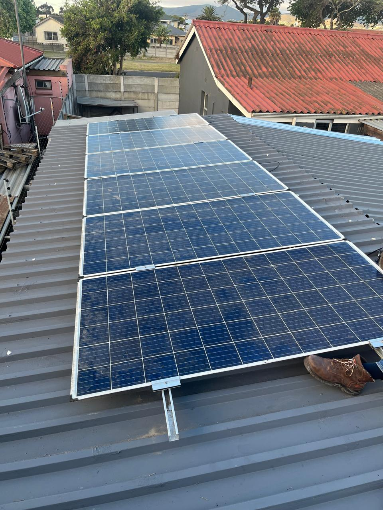

Practical advice from our own sites. No fluff.

How we set out coffers and trays, hide LED drivers, and get shadow-free cove light on the first skim.

Panel rails, DB split, changeover, dedicated circuits and surge protection, prep that saves your installer a day.

Bolted brackets, treated timber and honest spans, plus festoon lighting circuits done right the first time.